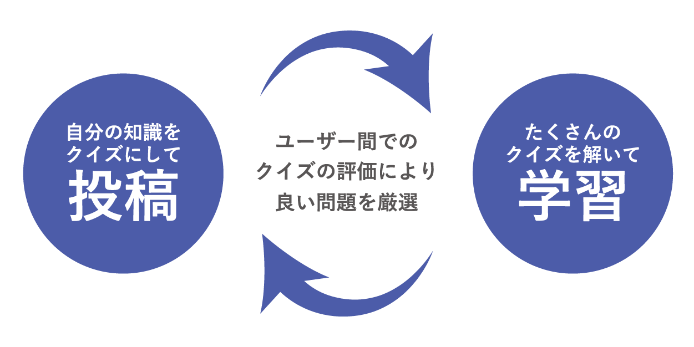

IT SQUAREは、ITを学ぶ全ての人の 広場 = Square です。
情報社会の今、多くの人にとってITは避けては通れません。
だけど、「ITってとっつきづらい…。」そう感じてる人だって多いはず。
はみんなが楽しく効率的に学べるクイズサイトです。
情報連携実習Ⅲ
IT SQUAREは、ITを学ぶ全ての人の 広場 = Square です。
情報社会の今、多くの人にとってITは避けては通れません。
だけど、「ITってとっつきづらい…。」そう感じてる人だって多いはず。
はみんなが楽しく効率的に学べるクイズサイトです。
IT SQUAREのしくみ
カテゴリごとの正答率で
自分の弱点がわかる！
日本はIT浸透が遅れている？
2020年5月、新型コロナウイルスの緊急経済対策として 支給が始まった10万円の特別定額給付金。
一部の自治体では新しいシステムと既存のデータが繋がっておらず、
オンラインでの申請なのに、印刷して情報を確認というような
アナログな作業をせざるを得ない事態になってしまいました。
なぜこんなことになってしまったのでしょう？
業務用途のデジタル・テクノロジのスキルに関する自己評価(2018)
出典：ガートナー(2018年1月)
業務上のITスキルに対する
自己評価の調査があります。
日本人は回答者の50％以上が
自身のスキルを
「素人」や「中程度」と評価しました。
これは他の国に比べて
ITに自信を持てず苦手意識を抱く人、
敬遠する人が多いということなのです。
出典：NTTデータ「ICT関連動向の国際比較及び
国内外のICT利活用先進事例調査」
学校での教育にも目を向けてみます。
世界的にみても日本は
教育分野でのIT利用率が低いようです。
また情報活用能力調査(2013)によると
現在の小中学生は、デジタルデバイスを
実際に操作するスキルが低い傾向にあります。
学生時代の不十分なIT教育が
たくさんのITが苦手な社会人を
生み出しているのかもしれません。
出典：NTTデータ「ICT関連動向の国際比較及び
国内外のICT利活用先進事例調査」
今やITは、「プロがやるもの」から「みんなで担っていくもの」に変化しました。
パソコンに触れる機会のない学生や ITを苦手になってしまった人たちが、
もっと気軽に学べる場所があったなら･･･
そこで生まれたのがです。
◇ 場所や時間にとらわれない効率的な学習
◇ 初歩的な内容、知っておくと便利な知識が中心
◇ ユーザーの評価によって厳選されたクイズ
誰でも、幅広く楽しく学べるウェブサイトを目指しています！
今やITは「プロがやるもの」から
「みんなで担っていくもの」に
変化しました。
パソコンに触れる機会のない学生や
ITを苦手になってしまった人たちが、
もっと気軽に学べる場所があったなら･･･
そこで生まれたのがです。
◇ 場所や時間にとらわれない
効率的な学習
◇ 初歩的な内容、
知っておくと便利な知識が中心
◇ ユーザーの評価によって
厳選されたクイズ
誰でも、幅広く楽しく学べる
ウェブサイトを目指しています！
現在の進捗
2020.4-2020.9
サーベイ(個人、チーム)
個人サーベイでメンバー全員が
SDGs 4番「質の高い教育をみんなに」について調べていたので、
チームとしての目標も教育関連になりました。
より身近なテーマをということで
日本のIT事情の現状を改善するための提案をすることに決まりました。
2020.9
中間発表
サイトの詳細(機能など)を決めながら、
提案の根拠を強めるためのさらなる調査と不合理な点の修正を行いました。
またサイトのワイヤーフレームやデザインガイドラインの作成も進めました。
2020.10-
サイト作成
現在、所属コースごとに
分担しながら
作業を進めています。
・エンジニアリング：システム構築(クイズゲームなど)
・デザイン：デザイン(コーディング、アイコン作成など)
サイト作成の進捗(完成したページ)
クリックで詳細を確認できます。
カテゴリごとにクイズを解けます。
下部のクイズ一覧から直接選んで解くことも可能です。
ログインすることでサイトを利用できます。ユーザー名とパスワードの登録ができます。
ランダムで出題される選択式のクイズに回答すると答えが表示されます。
クイズを10問解き終わると正答率とすべての解答が見られます。
今後の活動計画
サイトを完成させる
◇マイページの正答率表示
◇トップページのクイズソート機能
◇いいねボタンの実装
INIAD生にテストプレイをしてもらう
◇フィードバックをもとに最終調整
最終発表の準備